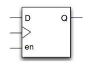

Keywords: flip-flop, latch
The Meaning of Latch
A latch is a level-sensitive storage element. The data storage action depends on the level value of the input clock (or enable) signal. Only when the latch is in the enabled state will the output change with the data input.
When the level signal is inactive, the output signal changes with the input signal, as if passing through a buffer; when the level is active, the output signal is latched. Any change in the excitation signal will directly cause the latch output state to change, which is very likely to cause oscillation due to unstable transient characteristics.
The schematic diagram of a latch is as follows:

A flip-flop is an edge-sensitive storage element. The data storage action (state transition) is synchronized by the rising or falling edge of a signal (restricting the state transition of the storage element to a very short period of time).
The schematic diagram of a flip-flop is as follows:

A register is a variable in Verilog used to temporarily store data involved in operations and operation results. When a variable is declared as a register, it can be synthesized into a flip-flop, a latch, or even a wire-type variable. In most cases, however, we expect it to be synthesized into a flip-flop, but sometimes due to code writing issues, it may be synthesized into an undesired latch structure.
The main hazards of latches are:
- 1) The input state may change multiple times, easily causing glitches and increasing the uncertainty of the next-stage circuit;
- 2) In most FPGA resources, implementing a latch structure may require more resources than a flip-flop;
- 3) The presence of latches makes static timing analysis more complex.
Latches are mostly used for clock gating control. In general design, we should avoid the generation of latches.
Incomplete if Structure
In combinational logic, an incomplete if-else structure will generate a latch.
For example, in the following model, the if statement lacks an else structure. By default, the value of register q remains unchanged under the else branch, meaning it has the function of storing data. Therefore, register q will be synthesized into a latch structure.
Example
input data,
input en ,
output reg q) ;
always @(*) begin
if (en) q = data ;
end
endmodule
There are mainly two methods to avoid such latches: one is to complete the if-else structure, or to assign initial values to the signal.
For example, the always statement in the above model can be changed to the following two forms:
Example
always @(*) begin
if (en) q = data ;
else q = 1'b0 ;
end
// Assign initial value
always @(*) begin
q = 1'b0 ;
if (en) q = data ; // If en is valid, rewrite the value of q; otherwise q will remain 0.
end
However, in sequential logic, an incomplete if-else structure will not generate a latch, as shown in the following model.
This is because register q has storage capability and its value changes only at the clock edge, which is exactly the characteristic of a flip-flop.
Example
input clk ,
input data,
input en ,
output reg q) ;
always @(posedge clk) begin
if (en) q <= data ;
end
endmodule
In combinational logic, when there are many assignment statements in a conditional statement, incomplete assignment statements under each branch condition will also generate a latch.
In fact, from the perspective of logical decomposition of each signal, this is equivalent to an incomplete if-else structure, where the related register signal lacks assignment behavior under other conditions. For example:
Example
input data1,
input data2,
input en ,
output reg q1 ,
output reg q2) ;
always @(*) begin
if (en) q1 = data1 ;
else q2 = data2 ;
end
endmodule
This situation can also be avoided by completing the assignment statements or assigning initial values. For example:
Example
// q1 = 0; q2 = 0; // or assign initial values to q1/q2 here
if (en) begin
q1 = data1 ;
q2 = 1'b0 ;
end
else begin
q1 = 1'b0 ;
q2 = data2 ;
end
end
Incomplete case Structure
The principle of latches generated by case statements is almost the same as if statements. In combinational logic, when the case item list is incomplete and no default keyword is added, or multiple assignment statements are incomplete, a latch will also be generated. For example:
Example
input data1,
input data2,
input [1:0] sel ,
output reg q ) ;
always @(*) begin
case(sel)
2'b00: q = data1 ;
2'b01: q = data2 ;
endcase
end
endmodule
Of course, there are also two methods to eliminate such latches: complete the case item list, or assign initial values to the signal.
When completing the case item list, you can list all the item cases, or use the default keyword to cover other item cases.
For example, the above always statement can be modified in the following two ways.
Example
case(sel)
2'b00: q = data1 ;
2'b01: q = data2 ;
default: q = 1'b0 ;
endcase
end
always @(*) begin
case(sel)
2'b00: q = data1 ;
2'b01: q = data2 ;
2'b10, 2'b11 :
q = 1'b0 ;
endcase
end
Original Signal Assignment or Judgment
In combinational logic, if the source of a signal assignment includes the signal itself, or if the judgment condition contains logic for the signal itself, a latch will also be generated. This is because the signal also needs to have storage capability, but there is no clock driving it. Such problems may occur in if statements, case statements, and ternary expressions, for example:
Example
reg a, b ;
always @(*) begin
if (a & b) a = 1'b1 ; //a -> latch
else a = 1'b0 ;
end
//signal itself are the assigment source
reg c;
wire [1:0] sel ;
always @(*) begin
case(sel)
2'b00: c = c ; //c -> latch
2'b01: c = 1'b1 ;
default: c = 1'b0 ;
endcase
end
//signal itself as a part of condition in "? expression"
wire d, sel2;
assign d = (sel2 && d) ? 1'b0 : 1'b1 ; //d -> latch
There is only one way to avoid such latches: avoid this coding style in combinational logic. Do not assign a signal from itself, and do not use the assigned signal itself in the condition logic.
For example, if immediate output is not required, the signal can be delayed by one clock cycle before combining the related logic. The first code that generated a latch above can be described as:
Example
reg a_r ;
always (@posedge clk)
a_r <= a ;
always @(*) begin
if (a_r & b) a = 1'b1 ; //there is no latch
else a = 1'b0 ;
end
Incomplete Sensitive Signal List
If the sensitive list in the always@() block in combinational logic is not complete, and it is not triggered when it should be, the related register will still hold the previous output result, thereby generating a latch.
In this case, completing the sensitive signal list or directly using always@(*) will eliminate the latch.
Summary
In short, to avoid the generation of latches, the following points need to be noted in combinational logic:
- 1) The structure of if-else or case statements must be complete.
- 2) Do not place the assigned signal in the assignment source or in condition judgments.
- 3) It is recommended to use always@(*) for the sensitive signal list.